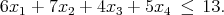
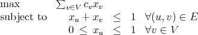
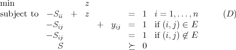

- The binary variables x1, x2, x3, and x4 must satisfy the constraint
 Find a minimal cover inequality. Lift the cover inequality.
- The binary variables z1, z2, z3, and z4 must satisfy the constraint

Use the results of part (a) to derive an inequality that defines a facet of the set of z IB4 satisfying the constraint. Why is your constraint facet-defining?
The linearly dependent vectors x1,…,xm in IRn are all on the hyperplane aT x = b, where b≠0. Show that they are affinely dependent.
Let G = (V,E) be a graph with nonnegative edge weights we.
- (15 points) Show that the problem of finding the maximum weight matching on G is equivalent to finding a maximum weight perfect matching on another graph G′ = (V ′,E′) with nonnegative edge weights we′, where V ′ and E′ are obtained from V and E by adding certain vertices and edges.
- (5 points) Given a maximum weight perfect matching problem, how can you construct an equivalent minimum weight perfect matching problem with nonnegative edge weights?
This question is concerned with node packings in the following graph.

- (5 points) The set of feasible solutions to the node packing problem on a graph
G = (V,E) with n vertices and m edges can be written as
We saw in class that the convex hull of S has dimension n and the nonnegativity constraints define facets of conv(S). Give another facet of conv(S) for the given graph.
- (5 points) Find a packing of cardinality 4 in the given graph.
- (10 points) Give a set of valid inequalities that together show that there cannot be a packing of cardinality greater than 4.
- (5 points) Is the graph perfect? (Justify your answer.)
- (7 points) Find nonnegative integral node weights cv such that the optimal value of the
LP relaxation
 is not integral.
- (8 points) The Lovasz Θ semidefinite programming relaxation of the node packing
problem has dual problem
 Give a feasible solution to the dual problem with value 4.